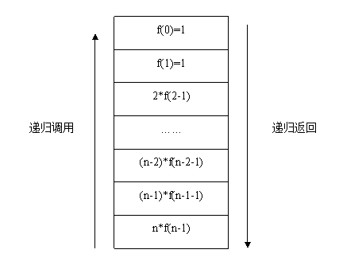
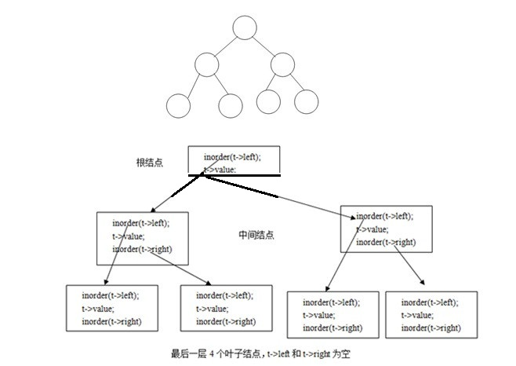
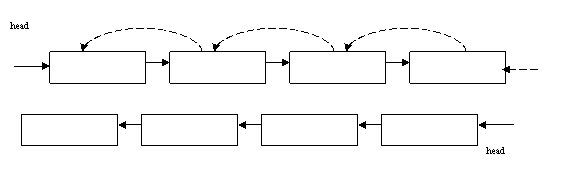
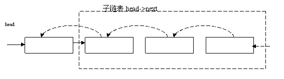
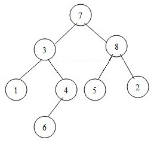

递归是指某个函数直接或间接的调用自身。递归首先需要有一个递归式，这个递归式规定如何将原问题划分成子问题。递归还要包含一个递归出口，即递归终止的条件，也就是最小子问题的求解，可以允许多个出口。
一个关于递归的典型例子就是阶乘。大家知道，阶乘的定义就是：
1． n!=n*(n-1)! 2． 0!=1，1!=1
在阶乘的定义中，第一句是递归式，第二句就是递归的出口。也就是说，要求出n的阶乘，只需要求处 n-1的阶乘，然后再乘以n就是n的阶乘。而要求出n-1的阶乘，又只需要求出n-2的阶乘，再乘以n-1就是n-1的阶乘。以次类推。但是，这样推下去，必须需要一个最初的值，才能不能无限推下去，因此需要一个出口。于是，就定义0!=1，1!=1。这样，出口找到了。
根据阶乘的定义很容易就想到递归方法，做法如下：
int fact(unsigned int n)
{
if(n==0)
return 1; // 递归出口
return n*fact(n-1); //n*Fact(n-1)就是递归式,将求n的阶乘，转化为子问题求n-1的阶乘
}
int main(void)
{
printf("10!=%d\n", fact(10));
return 0;
}
因此在计算f(n)的阶乘的时候，如下图所示，需要递归调用函数计算f(n-1)，直到遇到递归出口f(0)，再将结果逐层返回上层函数，供上层函数计算。
比如，欲计算10的阶乘，根据递归函数：
f(10)=10*f(9)=10*9*f(8)=10*9*8*f(7)=…10*9*8*7*6*5*4*3*2*1*f(0)
而根据递归的出口，f(0)为1，然后逐层返回上层函数，则f(10)=10*9*8*7*6*5*4*3*2*1，最近得到10的阶乘。
斐波那契数列指的是这样一个数列 1, 1, 2, 3, 5, 8, 13, 21, 34, 55, 89, 144, ...这个数列从第三项开始，每一项都等于前两项之和。
因此可以写出它的递归函数与递归出口：
f(1) = 1; f(2) = 1; f(n) = f(n-1) + f(n-2) n > 2
最简子问题（递归出口）：f(1),f(2)
子问题转化：f(n)=f(n-1)+f(n-2) n>2
unsigned long feibo(unsigned int n)
{
if (n == 1 || n==2)
{
return 1;
}
else
{
return feibo(n-1) + feibo(n-2);
}
}
树的基础理论请参考数据结构第五章。因为树本身就是使用了递归定义，因此在解决树的很多问题的时候都可以使用递归方法。
树的中序遍历的定义是：先遍历左子树，然后遍历根节点，最后遍历右子树。因此中序遍历一颗树的方法：
typedef struct _btree
{
int value;
struct _btree *left;
struct _btree *right;
}btree,*pbtree;
void inorder(btree *t)
{
if(t==NULL)
return;
inorder(t->left); // 先递归遍历左子树
printf(“%d\n”,t->value); // 遍历根节点
inorder(t->right) ; // 递归遍历右子树
}
如下图所示，中序遍历图中所示的二叉树时，递归函数调用的关系：当递归调用到叶子结点时，由于叶子结点无左右子树，所以遍历了叶子结点后，下层函数返回后，回到上层的递归函数，把上层的根结点遍历后（中序），再遍历上层根节点的右子树。
因此，在递归中，递归函数是不断嵌套调用自己，当遇到递归出口的时候，再返回到上层函数，一层层返回。
14.5 递归优缺点
一般来说，递归的时间复杂度和对应的非递归差不多，但是递归的效率是相当低的。次数不超过一定时候的情况下速度比迭代版本慢，比如二路归并内排序、二分查找等算法的实用实现都用迭代而不用递归。因为它主要花费在反复的函数调用和进栈出栈，各种中断等机制上。更有甚者，在递归求解过程中，某些解会重复的求好几次，这是不能容忍的，这些也是引入非递归机制的原因之一。递归如果嵌套过深，会造成栈溢出（为了防止栈溢出，可以跟踪栈的深度，如果超过某个深度，就返回）。
内核是不能使用递归，因为内核栈只有几KB到几十KB，栈很容易溢出。
递归看做到楼顶取东西。从一楼爬，看，不是的，继续爬，每层楼梯看上去都一样，你执行的过程都一样，但是实际上，1到2，2到3的楼梯是两个楼梯，等你到楼顶了，取了东西，你不能直接就跳楼，还得从楼顶一层层退回来。而驴子拉磨，则属于for循环。无论跑多少次，都是在原地。变化的只是磨盘里磨的东西，而不是驴每圈所在的不同位置。
递归程序设计是一个重要的程序设计思想。可以应用递归设计来解决字符串，链表，树中一些常见的问题。尤其是树中，很多问题都可以使用递归的方法来解决。在利用递归解决问题的时候，有2个关键的地方：
首先就是要找到问题的最简子问题，也就是问题中最简单的情况，比如对于一个链表，最简单情况就是链表为空或者只有一个结点；对于一个字符串，最简单情况就是字符串为NULL或者只有一个’\0’字符；自然数最简单的情况就是0或者1；树最简单的情况就是为NULL或者只有一个结点等，而更多的问题已经明确提出了最简子问题，比如阶乘中的0！和1！，在定义中已经给了出来。所以，最简子问题往往是很容易分析出来的。
然后是要通过分析和转换，将原问题转化为子问题。子问题和原问题是同类问题，但子问题的规模应该比原问题要小。比如求n!那么它的子问题就是(n-1)!，只需要把(n-1)!乘以n就是n的阶乘了。又比如要求斐波那契数列的第n个值，只需要求出(n-1)的值和(n-2)的值，那么就可以求出n的值了。在先序遍历树t的时候，当把根节点遍历完后，因为t->left和t->right是它的子树，也就是子问题，所以然后用递归遍历t->left和t->right就可以了。
14.6.1 字符串长度计算
问题：不允许使用任何全局或局部变量编写 int strlen(char *s)，计算字符串的长度。
分析：
递归出口即最简子问题：
S==NULL 长度为0
*s==’\0’，长度为0
原问题与子问题的转化：
s是一个字符串，s+1也是一个字符串，而且是s的子串，所以只需要求出s+1字符串的长度，再加1就是s的长度，即：
1+strlen(s+1)
因此可以得出下面的算法：
size_t strlen(const char *s)
{
if(s==NULL || *s==’\0’)
{
return 0;
}
return 1+strlen(s+1);
}
或者用三元运算符，进一步简化为：
size_t strlen( const char* s )
{
return (s==NULL||*s==’\0’)?0:1+strlen(s+1);
}
14.6.2 反向输出字符串
问题：请反向的输出一个字符串：比如”hello, world!”，打印出来是：”!dlrow, olleh”。
分析：
递归出口：
当字符串为NULL或者为’\0’时：直接return。
递归子问题：
要反向输出字符串，只需要将s+1这个子串输出后，再输出*s（即字符串s的第一个字符），即完成反向打印。
void inverse_print(char *s)
{
if( *s = = '\0'||s==NULL )
return;
inverse_print( s+1 );//先递归反向打印s的子串s+1
printf( "%c", *s );
}
14.6.3 递归实现链表转置。
将一个单向链表进行转置，使其头变尾，尾变头，各个结点指向它的前个结点。如下图所示：
分析：
递归的出口：当链表为空或者只有一个结点，不用处理，直接返回
递归子问题：只要将链表head的子链表：head->next逆置了，然后将head->next的尾结点指向head，那么整个链表head就得到了逆置。

typedef struct _node
{
int value;
struct _node *next;
}node,*list
list resverse_list(list l)
{
if(!l || !l->next)
return l;
list n = resverse_list (l->next);//先逆置l->next子链表,逆置后l->next即为l->next的尾结点
l->next->next = l;//把子链表的尾结点l->next指向l，l就变为了尾结点
l->next=null; //将尾结点的next指针设置为NULL
return n;
}
14.6.4 字符串逆置
用递归的方法将一个字符串逆置，比如”hello world”→”dlrow olleh”。
分析：
最简子问题（递归出口）：str==NULL或者len==1或者len==0,这个时候，不需要逆置
子问题转化：只要将str+1，长度为len-2的子串用同样的方法进行逆置之后，再将字符串最左边与最右边的字符交换了，即可完成字符串的逆置。
比如”hello world”，先逆置除了最左边和最右边字符的子串：”ello worl”，然后再交换’h’和’d’:
void reverse_str(char *str，size_t len)
{
if(str==NULL || len==1||len==0)
return;
reverse_str(str+1,len-2);//先逆置子串
char tmp=*str;//再交换主串最左边与最右边的字符
*str=*(str+len-1)
*(st+len-1)=tmp;
}
14.6.5台阶问题
有一个50阶的楼梯，每次可以上一阶或者两阶，总共的方法有多少种。
分析：
最简子问题（递归出口）：当只有1个台阶的时候，走法为1种；当有2个台阶的时候，走法有2个（一次上1阶，或者一次上2阶）。
子问题转化：在到达第n个台阶的时候，必然会经过第n-1或者n-2个台阶。那么，当一个人到达n-1个台阶的时候，他向上走一步就可以到达第n个台阶，所以，前往n个台阶的走法包含了n-1个台阶的走法数，记为f(n-1)；当一个人到达第n-2个台阶的时候，他向前一次走2个台阶就可以到达第n个台阶或者向前一次走1个台阶共走2步即可到达第n个台阶，由于一次走1个台阶会走到n-1个台阶，这种走法已经被包含在了n-1个台阶的走法中，所以只需要考虑从第n-2个台阶一次走2个台阶达到第n个台阶，假如到达n-2个台阶的走法为f(n-2)，那么可以得出，到达第n个台阶的走法实际上是达到n-1个台阶和n-2个台阶的总和，因为当这个人走到了n-1个台阶或者n-2个台阶的时候，它再向前的走法都是唯一的了。于是得出下面的公式：
f(1)=1
f(2)=2
f(3)=3
f(n)=f(n-1)+f(n-2)
long step_method_num(size_t n)
{
if(n==1)
return 1;
if(n==2)
return 2;
return step_method_num(n-1)+step_method_num(n-2);
}
14.6.6 求一棵树中2个结点的最近公共结点。
如下图所示：结点1和6的最近公共结点是3。
2个结点的最近公共结点的本质是这2个结点，一个在某个结点的左子树，一个在某个结点的右子树，那么该结点必然是这2个结点的最近公共结点。因此，只要在遍历该树的时候，对于遍历中的每一个结点，判断这2个结点是不是分别在这个结点的左右子树上，如果是，则该结点即为最近公共结点。如果这2个结点都在该结点的左子树，那么就递归判断左子树；在右子树，就递归判断右子树。
判断一个值是不是在树中：
bool search_tree(btree *t, int value)
{
if(t==NULL)
return false;
if(t->value==value)
return true;
return (search_tree(t->left,value) || search_tree(t->right,value));
}
查找2个结点v1,v2的公共结点，放入res中。成功返回1，失败返回0。
int find_lowest_common_node(btree *t, int v1,int v2,int *res)
{
if(t==NULL || res==NULL)
return 0;
bool v1_beleft=false;
bool v1_beright= false;
bool v2_beleft= false;
bool v2_beright= false;
v1_beleft=search_tree(t->left,v1);
if(!v1_beleft)
v1_beright=search_tree(t->right,v1);
v2_beleft=search_tree(t->left,v2);
if(!v2_beleft)
v2_beright=search_tree(t->right,v2)
//v1,v2分别在该结点的左右子树
if(v1_beleft&&v2_beright ||
v2_beleft&&v1_beright)
{
*res=t->value;
return 1;
}
//v1,v2在结点的左子树，递归查找左子树
if(v1_beleft && v2_beleft)
return find_loweset_common_node(t->left,v1,v2,res);
//v1,v2在结点的右子树，递归查找右子树
return find_loweset_common_node(t->right,v1,v2,res);
}Xh
本页共231段，7092个字符，13201 Byte(字节)